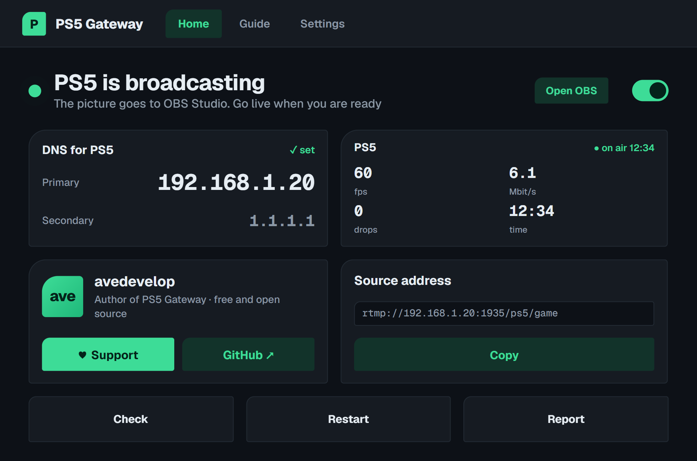
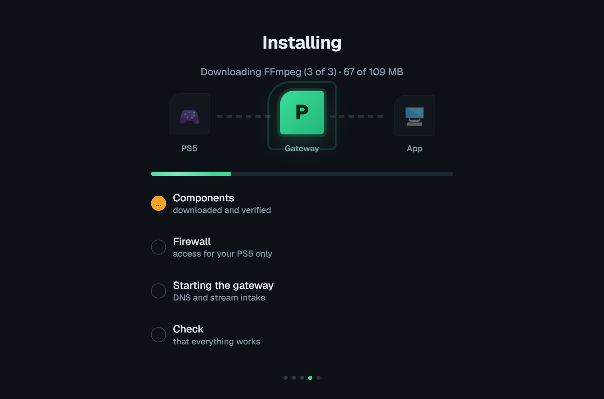
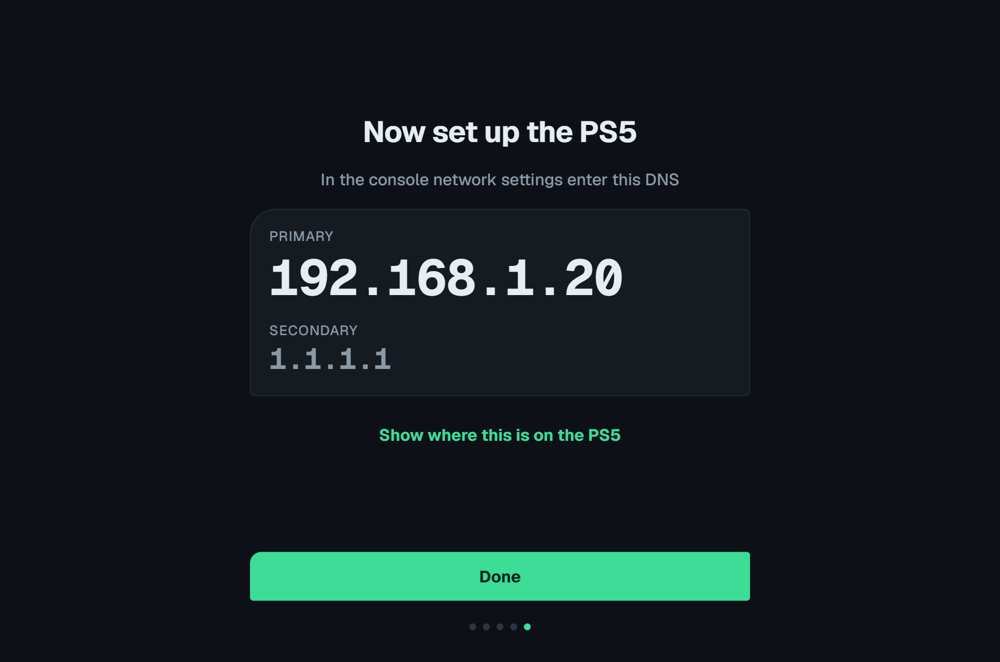

Your PS5's picture in OBS.
No capture card.
PS5 Gateway sends the console's built-in Twitch broadcast to your PC or Mac. You open it in OBS as an ordinary source and stream with your own scenes, overlays and alerts.
Windows your system
Download for WindowsBefore you open it: Windows may say “Windows protected your PC”, because the app is not signed with a paid certificate yet. Click More info, then Run anyway.
macOS your system
Download for MacBefore you open it: macOS will say it “could not verify” the app, because it is not signed with an Apple developer certificate yet. Click Done, then open System Settings › Privacy & Security, scroll down and click Open Anyway.
Free and open source (MIT). View on GitHub →

Five minutes from download to broadcast
The app walks you through the setup. Nothing is public until you press Start Streaming in OBS.

1Open the app
It downloads its helper programs with a real progress bar and sets up the firewall for your PS5 only.

2Type two numbers on the PS5
The app shows the DNS to enter in the console's network settings. Then restart the PS5 completely.
3
Start the broadcast
Create › Broadcast › Twitch on the PS5. The picture appears in OBS, ready for your scenes.
Why people use it
No hardwareThe PS5 sends its stream over your home network. No capture card, no HDMI splitter.
Real OBSScenes, filters, chat, alerts, recording. Everything OBS does, also with Streamlabs Desktop.
You stay in controlThe gateway never sends anything to Twitch. Nothing is public until you start streaming in OBS.
Quiet in the backgroundLives in the tray or menu bar, keeps the computer awake during a broadcast, warns you if the PS5 uses the wrong DNS.
What you need
- Windows 10 / 11 or a Mac (Apple silicon or Intel)
- A PS5 on the same home network as the computer
- Node.js 24 LTS (the gateway runs on it)
- OBS Studio or Streamlabs Desktop